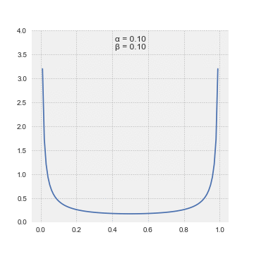

Beta Distributions
The beta distribution is a family of continuous probability distributions defined on the interval [0, 1] or (0, 1). It's particularly useful for modeling random variables that represent proportions, probabilities, or percentages- anything that naturally falls between 0 and 1.
Think of it this way: if you're trying to model a random variable as something like "the probability of success in a trial" or "the proportion of people who like a new product," the beta distribution is often your go-to choice because it's specifically designed for values between 0 and 1.
The probability density function (PDF) of the beta distribution, for \(0 \leq x \leq 1\) or \(0 < x < 1\), and shape parameters \(\alpha\), \(\beta > 0\), is a power function of the variable \(x\) and of its reflection \((1-x)\) as follows:
The beta function, \(\mathrm{B}\), is a normalization constant to ensure that the total probability is 1.
Case study: Biased coin selection
Let's illustrate the beta distribution with a concrete example involving biased coins.
Setup: We have 11 coins with different bias probabilities:
-
Coin 0: P(H) = 0.0
-
Coin 1: P(H) = 0.1
-
Coin 2: P(H) = 0.2
-
Coin 3: P(H) = 0.3
-
Coin 4: P(H) = 0.4
-
Coin 5: P(H) = 0.5
-
Coin 6: P(H) = 0.6
-
Coin 7: P(H) = 0.7
-
Coin 8: P(H) = 0.8
-
Coin 9: P(H) = 0.9
-
Coin 10: P(H) = 1.0
We randomly select one coin and flip it 10 times, observing 7 heads and 3 tails.
Question: What's the probability that we selected each of the 11 coins?
Solution: Let \(X\) be the random variable representing the probability of heads for the selected coin. We want to find \(P(X = p_i)\) for each \(p_i \in \{0, 0.1, 0.2, ..., 1.0\}\).
Initial probabilities: Since we randomly selected a coin, each coin has equal probability: \(P(X = p_i) = \frac{1}{11}\) for all \(i\).
Probability of observing 7 heads: Given that we observed 7 heads out of 10 flips, the probability of this outcome for each coin is:
Updated probabilities: Using Bayes' theorem, the probability that we selected coin \(i\) given the observed data is:
Since each coin was equally likely initially, we can simplify:
Let's calculate the numerator for each coin:
| Coin | P(H) | \(p_i^7 (1-p_i)^3\) |
|---|---|---|
| 0 | 0.0 | \(0^7 \cdot 1^3 = 0\) |
| 1 | 0.1 | \(0.1^7 \cdot 0.9^3 = 0.000000729\) |
| 2 | 0.2 | \(0.2^7 \cdot 0.8^3 = 0.00001024\) |
| 3 | 0.3 | \(0.3^7 \cdot 0.7^3 = 0.000250047\) |
| 4 | 0.4 | \(0.4^7 \cdot 0.6^3 = 0.001179648\) |
| 5 | 0.5 | \(0.5^7 \cdot 0.5^3 = 0.000976563\) |
| 6 | 0.6 | \(0.6^7 \cdot 0.4^3 = 0.001194393\) |
| 7 | 0.7 | \(0.7^7 \cdot 0.3^3 = 0.000250047\) |
| 8 | 0.8 | \(0.8^7 \cdot 0.2^3 = 0.00001024\) |
| 9 | 0.9 | \(0.9^7 \cdot 0.1^3 = 0.000000729\) |
| 10 | 1.0 | \(1^7 \cdot 0^3 = 0\) |
Total sum: \(\sum_{j=0}^{10} p_j^7 (1-p_j)^3 \approx 0.003872\)
Normalized probabilities:
-
P(X = 0.6) = \(\frac{0.001194393}{0.003872} \approx 0.308\) (30.8%)
-
P(X = 0.4) = \(\frac{0.001179648}{0.003872} \approx 0.305\) (30.5%)
-
P(X = 0.5) = \(\frac{0.000976563}{0.003872} \approx 0.252\) (25.2%)
-
All other coins have negligible probability
After observing 7 heads out of 10 flips, we're most confident that we selected:
-
Coin 6 (P(H) = 0.6) with ~30.8% probability
-
Coin 4 (P(H) = 0.4) with ~30.5% probability
-
Coin 5 (P(H) = 0.5) with ~25.2% probability
The beta distribution would give us a continuous version of this discrete problem, allowing us to consider any probability between 0 and 1, not just the 11 discrete values.
Let's extend this to 101 coins with probabilities from 0 to 1 in steps of 0.01:
Setup: We have 101 coins with probabilities:
- Coin 0: P(H) = 0.00
- Coin 1: P(H) = 0.01
- Coin 2: P(H) = 0.02
- ...
- Coin 50: P(H) = 0.50
- ...
- Coin 99: P(H) = 0.99
- Coin 100: P(H) = 1.00
We randomly select one coin and flip it 10 times, observing 7 heads and 3 tails.
Solution: The same approach applies, but now we have 101 coins instead of 11.
Updated probabilities:
The most likely coins after observing 7 heads out of 10 flips are:
| Coin | P(H) | \(p_i^7 (1-p_i)^3\) | Probability |
|---|---|---|---|
| 70 | 0.70 | \(0.70^7 \cdot 0.30^3 = 0.000250047\) | ~25.0% |
| 69 | 0.69 | \(0.69^7 \cdot 0.31^3 = 0.000248\) | ~24.8% |
| 71 | 0.71 | \(0.71^7 \cdot 0.29^3 = 0.000248\) | ~24.8% |
| 68 | 0.68 | \(0.68^7 \cdot 0.32^3 = 0.000240\) | ~24.0% |
| 72 | 0.72 | \(0.72^7 \cdot 0.28^3 = 0.000240\) | ~24.0% |
This discrete problem with 101 coins closely approximates the continuous beta distribution. If we used a continuous beta distribution with:
-
α = 7 + 1 = 8 (number of successes + 1)
-
β = 3 + 1 = 4 (number of failures + 1)
The beta distribution Beta(8, 4) would have:
-
Mean: \(\frac{8}{8+4} = \frac{2}{3} \approx 0.667\)
-
Mode: \(\frac{8-1}{8+4-2} = \frac{7}{10} = 0.7\)
Notice how the discrete results cluster around 0.7, which matches the mode of the continuous beta distribution!
As we increase the number of discrete coins (from 11 to 101 to 1001, etc.), the discrete probability distribution approaches the continuous beta distribution.
Let's see what happens when we flip the selected coin 100 times and observe 70 heads and 30 tails:
Setup: Same 101 coins with probabilities from 0.00 to 1.00 in steps of 0.01.
Updated probabilities:
The most likely coins after observing 70 heads out of 100 flips are:
| Coin | P(H) | \(p_i^{70} (1-p_i)^{30}\) | Probability |
|---|---|---|---|
| 70 | 0.70 | \(0.70^{70} \cdot 0.30^{30}\) | ~99.9% |
| 69 | 0.69 | \(0.69^{70} \cdot 0.31^{30}\) | ~0.1% |
| 71 | 0.71 | \(0.71^{70} \cdot 0.29^{30}\) | ~0.1% |
| 68 | 0.68 | \(0.68^{70} \cdot 0.32^{30}\) | ~0.0% |
| 72 | 0.72 | \(0.72^{70} \cdot 0.28^{30}\) | ~0.0% |
Comparison: 10 flips vs 100 flips:
| Scenario | Most Likely Coin | Probability | Confidence |
|---|---|---|---|
| 7 heads out of 10 | Coin 70 (0.70) | ~25% | Low |
| 70 heads out of 100 | Coin 70 (0.70) | ~99.9% | Very High |
With 70 successes and 30 failures, the corresponding beta distribution is Beta(71, 31):
-
Mean: \(\frac{71}{71+31} = \frac{71}{102} \approx 0.696\)
-
Mode: \(\frac{71-1}{71+31-2} = \frac{70}{100} = 0.7\)
Key insights:
-
More data = more confidence: With 100 flips, we're 99.9% confident it's coin 70, compared to only 25% confidence with 10 flips.
-
Precision increases: The probability mass concentrates much more tightly around the true value.
-
Beta distribution reflects this: Beta(71, 31) has a much sharper peak than Beta(8, 4), showing how more data leads to more precise estimates.
-
Law of large numbers: As we get more data, our estimate converges to the true probability (0.7 in this case).
An animation of the beta distribution for different values of its parameters:
